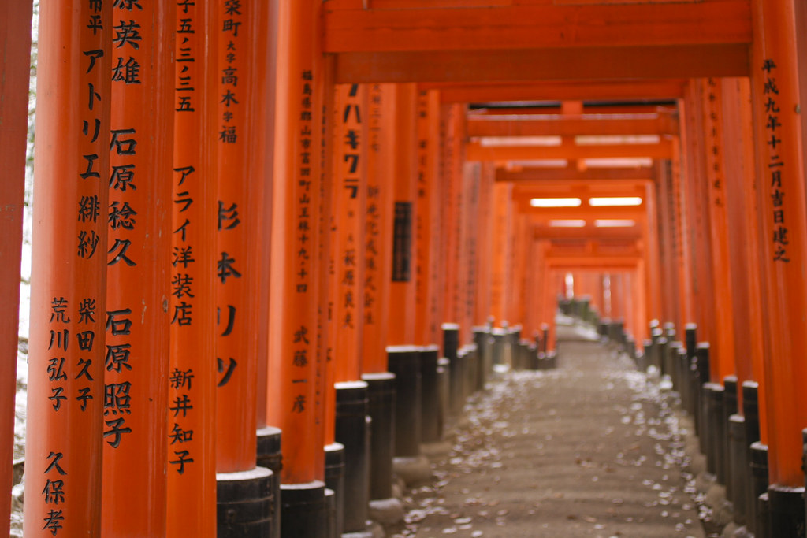

Les mille torii de Fushimi Inari

Au sud de Kyoto, le sanctuaire Fushimi Inari-taisha est célèbre pour ses milliers de torii vermillon qui serpentent à travers la montagne sacrée Inari. Ces portiques traditionnels, offerts par des particuliers et des entreprises, forment un chemin spectaculaire et symbolique, invitant les visiteurs à une ascension hors du temps.
En parcourant ces tunnels de torii, on plonge dans une atmosphère spirituelle unique, où chaque pas rapproche du cœur des croyances shintoïstes. Le contraste entre le rouge éclatant des portiques et le vert profond de la forêt environnante crée un paysage saisissant, changeant au fil des saisons et de la lumière.
Symbole fort de Kyoto et du Japon, les mille torii de Fushimi Inari offrent une expérience inoubliable mêlant spiritualité, tradition et nature, et constituent une étape incontournable pour tous les voyageurs en quête d’authenticité.